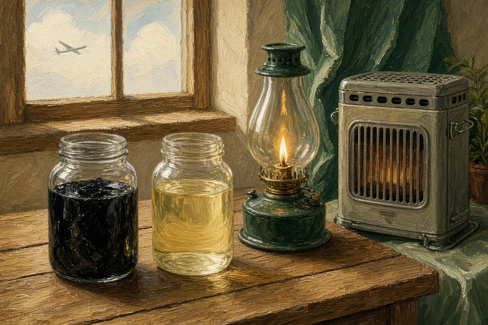

From oil to kerosene Crude oil and kerosene מנפט לקרוסין מנפט גולמי לקרוסין
By the end of this page, say how kerosene is different from crude oil. By the end of this page, explain the difference between kerosene and crude oil. בסוף העמוד תוכלו לומר במה קרוסין שונה מנפט גולמי. בסוף העמוד תוכלו להסביר במה נבדל קרוסין מנפט גולמי.
Coal was not the only fuel people knew long ago. They also knew kerosene and cooking gas. These burn well and give a lot of heat. Like coal, they lie deep under the ground, and they were hard to get out. Machines made that work easier. Coal was not the only fuel people already knew many years ago. They also knew kerosene and cooking gas, two materials that burn well and give off a great deal of heat. Like coal, they lie deep in the earth, and bringing them up was hard work. Machines made that work easier, so people could use these fuels. הפחם לא היה הדלק היחיד שאנשים הכירו לפני שנים רבות. הם הכירו גם קרוסין וגז בישול. אלה בוערים היטב ונותנים הרבה חום. כמו הפחם, הם עמוק באדמה, והיה קשה להוציא אותם. המכונות הקלו על העבודה. לפני שנים רבות הכירו בני האדם לא רק את הפחם. הם הכירו גם קרוסין וגם גז בישול, שני דלקים שבוערים יפה ומחממים מאוד. שניהם, כמו הפחם, חבויים עמוק באדמה, והעלאתם הייתה עבודה קשה. מכונות הקלו על ההעלאה הזאת, ומאז אפשר היה להשתמש בדלקים האלה.
Kerosene is not found in the ground ready to burn. People make it from crude oil. Crude oil is the fuel that comes up from under the ground. Kerosene is not found in the ground in the form we burn. It is made from a material called crude oil, and crude oil is what is taken out of the earth. את הקרוסין לא מוצאים באדמה מוכן לשימוש. מכינים אותו מנפט גולמי. נפט גולמי הוא הדלק שמוציאים מתוך האדמה. קרוסין אינו מחכה באדמה בצורה שבה שורפים אותו. מפיקים אותו מנפט גולמי, והנפט הגולמי הוא החומר שמעלים מן האדמה.
Kerosene is a clear liquid with a sharp smell. In Hebrew many people call it נפט, but its right name is kerosene. Many homes use it in heaters. Planes use it too. Long ago, people burned it in lamps and in stoves, to cook and to keep warm. Kerosene is a clear liquid with a sharp smell. In Hebrew it is often called נפט, yet its correct name is kerosene. Many homes still use it in heating stoves. It is also a fuel for airplanes. In the past, people burned it in lamps and in stoves for cooking and for heat. קרוסין הוא נוזל שקוף עם ריח חזק. בעברית קוראים לו הרבה פעמים נפט, אבל השם הנכון הוא קרוסין. בהרבה בתים משתמשים בו בתנורי חימום. גם מטוסים משתמשים בו כדלק. פעם שרפו אותו במנורות ובתנורים, לבישול ולחימום. קרוסין הוא נוזל צלול וריחו חריף. בעברית רגילים לקרוא לו נפט, אבל השם המדויק הוא קרוסין. גם היום בתים רבים מחממים את החדרים בתנורי קרוסין, ומטוסים טסים על הדלק הזה. בדורות קודמים הוא דלק במנורות ובכיריים, לאור, לבישול ולחימום.
Kerosene and נפט A word: kerosene and נפט קרוסין ונפט קרוסין ונפט
In Hebrew, many people say נפט when they mean kerosene. Kerosene is the clear liquid. The black liquid from the ground is crude oil, נפט גולמי. In everyday Hebrew, נפט often means kerosene, the clear liquid burned in heaters and lamps. The black liquid from under the ground has a longer name: crude oil, נפט גולמי. הרבה אומרים נפט ומתכוונים לקרוסין. קרוסין הוא הנוזל השקוף. הנוזל השחור מהאדמה הוא נפט גולמי. בעברית של יום-יום, נפט פירושו לרוב קרוסין, הנוזל הצלול שנשרף בתנורים ובמנורות. לנוזל השחור מתוך האדמה יש שם ארוך יותר: נפט גולמי.
Sometimes the news says oil was found somewhere in the world. That is not kerosene. It is a black, thick liquid. Its full name is crude oil. We call it crude because it is oil just as people find it in nature, before they change it. It is an oily liquid from the earth, so it is also called earth oil. Now and then the news reports that oil has been found somewhere in the world. Those reports do not mean kerosene. They mean a black, thick liquid whose full name is crude oil. It is called crude because it is oil as nature left it, a raw material. Crude oil is an oily liquid found inside the earth, which is why it is also called earth oil. לפעמים שומעים בחדשות שמצאו נפט במקום כלשהו בעולם. לא מתכוונים לקרוסין. מתכוונים לנוזל שחור וסמיך. שמו המלא הוא נפט גולמי. קוראים לו גולמי כי זה הנפט כפי שמוצאים אותו בטבע, לפני שמשנים אותו. זה נוזל שמנוני מתוך האדמה, ולכן קוראים לו גם שמן אדמה. בחדשות מספרים לפעמים שגילו נפט במקום כלשהו בעולם. הכוונה אינה לקרוסין, אלא לנוזל שחור וסמיך, ושמו המלא נפט גולמי. השם גולמי אומר שהנפט עוד כפי שהטבע נתן אותו, חומר גלם לפני שמכינים ממנו דברים. מפני שהוא נוזל שמנוני מתוך האדמה, יש לו גם שם נוסף: שמן אדמה.
